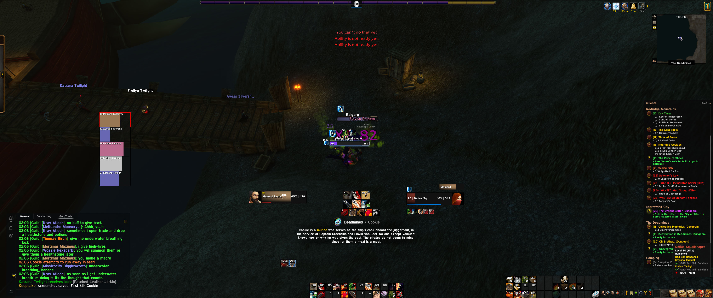
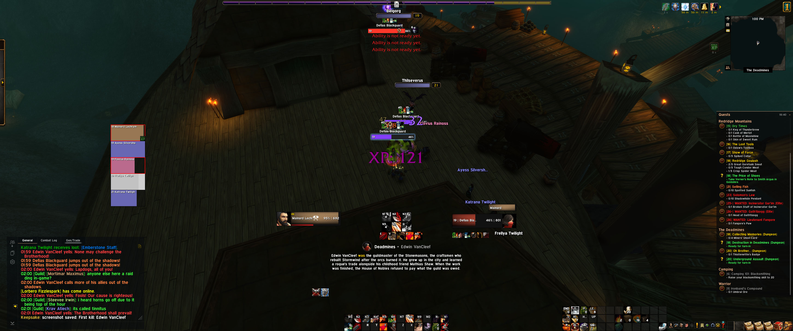
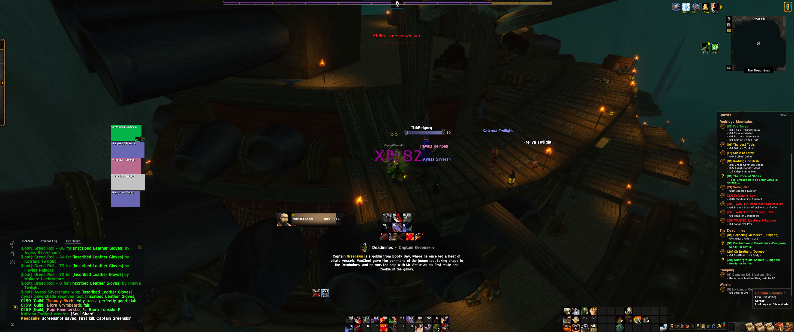
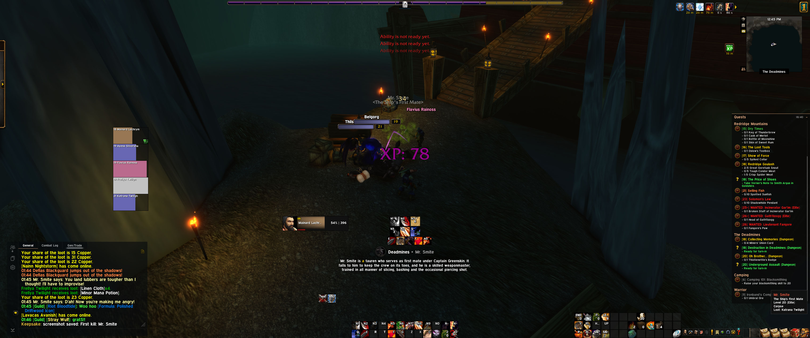
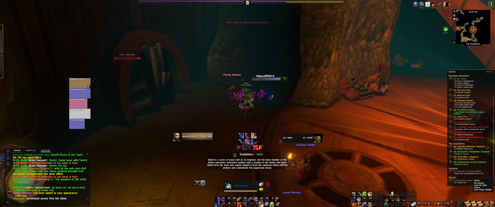
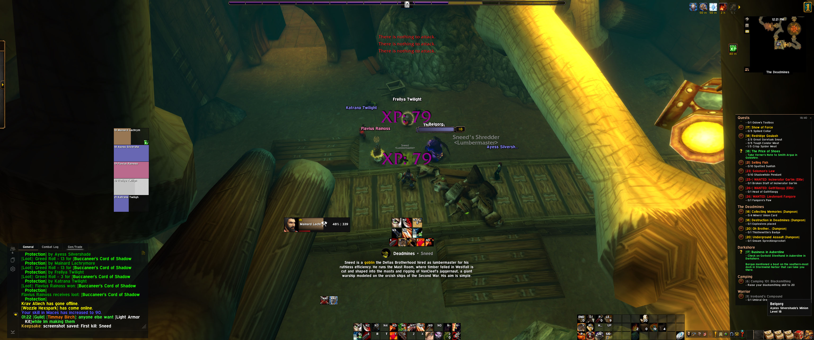

Warrior
Steel and resolve
A Stormwind dock rat who inherited an old dwarf's forge, and his good name.
From ForeverCrafter and OneCast and TrackMe · last saved Nov 6
From TrackMe · updated Nov 6.






Mainard is a big man, tall and heavy through the chest, with the kind of broad shoulders that make doorways look narrow. His dark hair is kept short and practical, and his beard is full and trimmed close, the way the dwarves taught him to keep it out of a forge fire. His hands are scarred from hammer and hot iron rather than from battle. He wears heavy plate he forged himself, built on dwarven patterns and scaled up for a man twice a dwarf's height, with a broad shield on his arm and a plain, heavy sword at his hip. Every piece of it carries his own maker's mark.
There is one scar on him worth mentioning: a short, pale line across his back, below the left shoulder blade. It isn't large, and he doesn't hide it.
Mainard was born with nothing on the Stormwind docks. His father hauled cargo when there was cargo to haul, and his mother mended nets and sails. Before he could read, he could tie every knot a ship needs, and by the age of ten he was running ropes and scrubbing decks for anyone who would toss him a copper.
He was still a boy when the Horde came to Stormwind. The city burned, and the docks burned with it. In the smoke and the screaming, a dying guardsman's sword ended up in his hands, simply because no one else was left to hold it. He doesn't remember deciding to fight. He remembers standing in front of a dockworker's little girl while an orc came at them, and he remembers that he didn't move. When the orc's second blow came, he turned to shield her and took it across his back instead. Then he picked her up and ran for the ships.
People say a scar on the back means a man ran from a fight. Mainard doesn't argue. He did run, and he carried someone with him.
The survivors sailed north to Lordaeron as refugees. Mainard went as a deckhand, and he stayed one through the Second War, working the supply ships that ran soldiers and steel up and down the coast for the new Alliance. Many of those soldiers were dwarves. They were loud and gruff, and they were the first people who ever treated the big quiet boy from the docks as one of their own. One old sergeant of the Ironforge Guard watched him lift a crate meant for two men, then handed him a shield and told him to hold it until his arms gave out. They never did.
When the war ended, the old sergeant, Brodd Coalgrip, retired from the Guard and went home to Ironforge to reopen the small family forge he had left behind. He asked the big quiet deckhand to come with him and work the bellows, and Mainard went. Brodd had no wife, no children and very little patience, but he taught Mainard everything: how to read the color of hot steel, how to fold a blade and how to hammer a dent out of a shield so it held better than it did new.
Brodd died a few years later, gruff to the end. When his will was read, the dwarves were surprised to learn that he had left his forge, his tools and the rooms above them to the human. Mainard has lived above that forge ever since. He kept the old sign over the door, Coalgrip's, and he hasn't changed it. In a city where a human is always a little bit of a guest, the dwarves of the neighborhood treat the forge as theirs, and they treat him as the one who keeps Brodd's name alive.
He met his wife, Nycelle, in Ironforge. She was a fellow human, a quick-witted woman who ran a stall near the Commons, and the first person he ever met who wasn't the least bit intimidated by him. She teased him about his size until he finally laughed, and he married her within the year.
Everything Mainard does now, he does for her and for the family they are building. He doesn't work or fight for glory, gold or the Alliance as an idea. He does it so that the people he loves can live in a quiet house inside a mountain that no army has ever broken.
Mainard spends most of his days at the anvil in Coalgrip's, and the rest at the Great Forge beside the dwarven smiths, who long ago stopped counting him as a guest. He shapes armor, weapons and shields, and he still takes the most pride in repair work, making something broken whole again. He has also picked up engineering from the gnomes and dwarves around him. He likes anything with moving parts that can be taken apart, understood and put back together better.
On his days off, he goes up to the frozen lakes of Dun Morogh or down to Loch Modan with a line in the water, and he cooks what he catches himself. It's the closest he gets to the docks he grew up on, and he never says a word about it.
Mainard is calm in a way that settles a room. He rarely raises his voice, because he rarely needs to. When he speaks, people listen, and when he tells someone how a thing should be done, it gets done that way, dwarves included. Strangers see an alpha: a large, quiet man who is plainly in charge without trying to be. His friends see the same man, only with a slow, easy smile and a surprisingly patient way with children.
He fears nothing. He has already faced the worst day of his life at eleven years old, with a borrowed sword, and he didn't move.
What he wants is simple. He wants happiness for himself, for Nycelle and for whatever family comes after them, and he is willing to stand in front of anything to keep it.
The road from level 1 to 60. This part of the story is yet to be written.
Life at level 60. This part of the story is yet to be written.